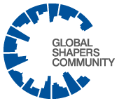

Acerca
Global Shapers Community es la iniciativa más joven del Foro Económico Mundial formada por un red de 452 Hubs liderados por jóvenes extraordinarios que generan un alto impacto en sus comunidades.
La comunidad fue creada para incluir a los jóvenes en los procesos de toma de decisiones y la definición de la agenda a nivel local, regional y mundial.
Los Global Shapers son individuos altamente motivados que tienen un gran potencial para ser los futuros líderes de la sociedad.
Ellos trabajan en conjunto con comunidades del Foro Económico Mundial como los Young Global Leaders, y representan la voz de los jóvenes en los eventos del Foro Económico Mundial.

